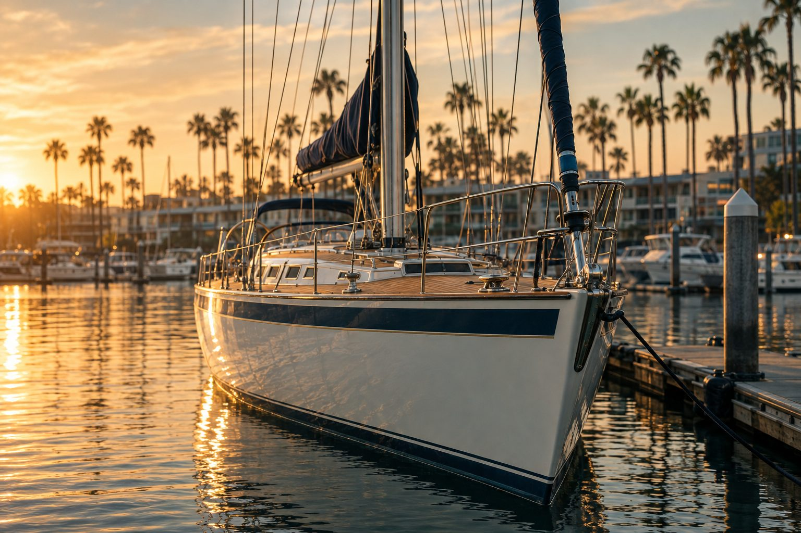
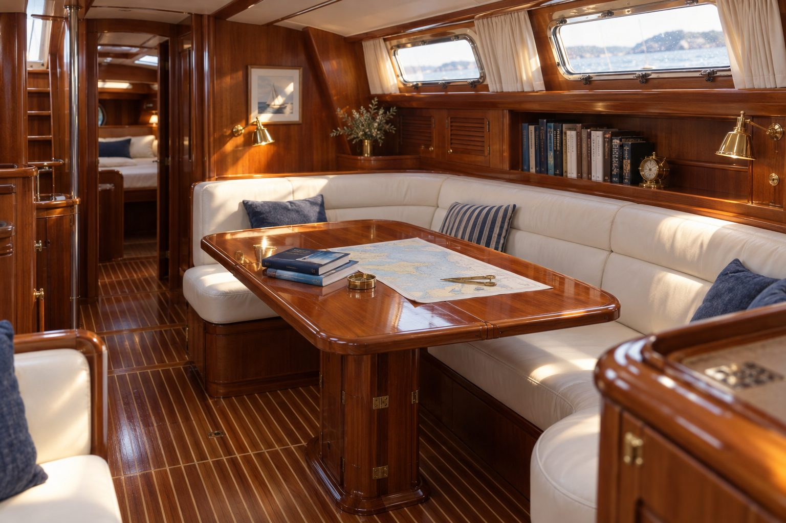
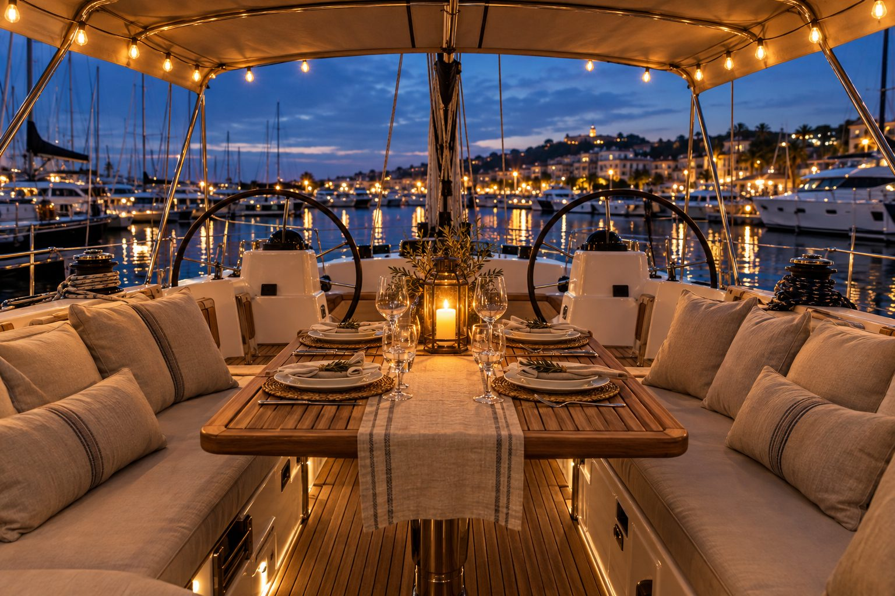
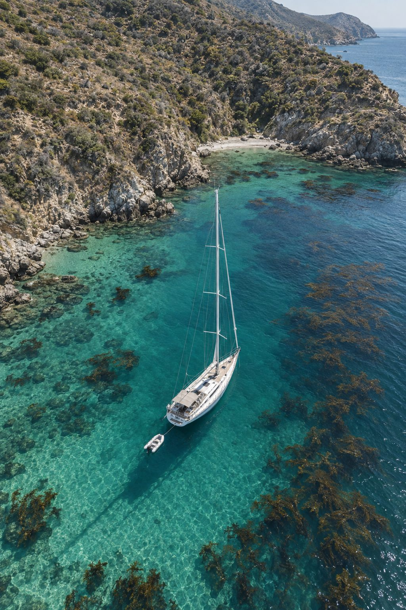
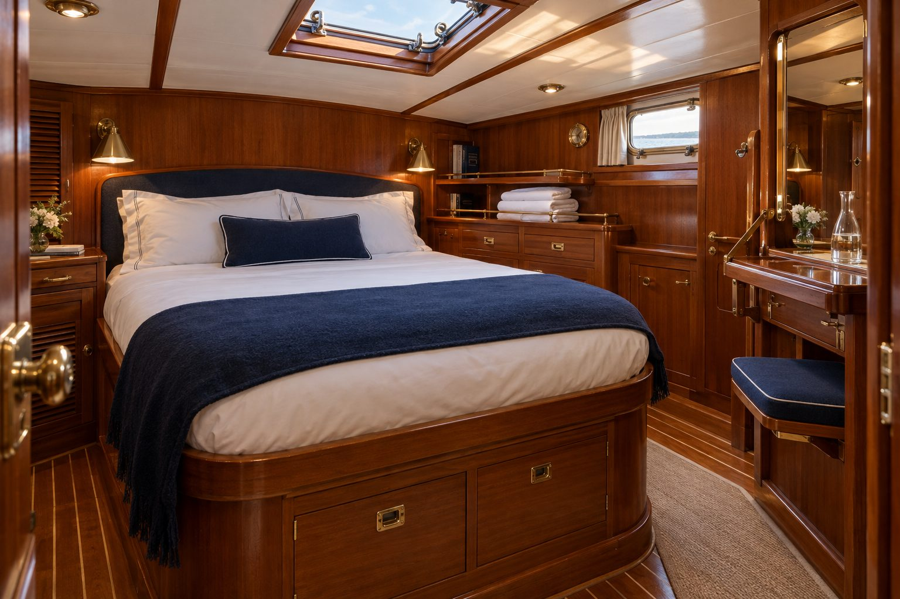
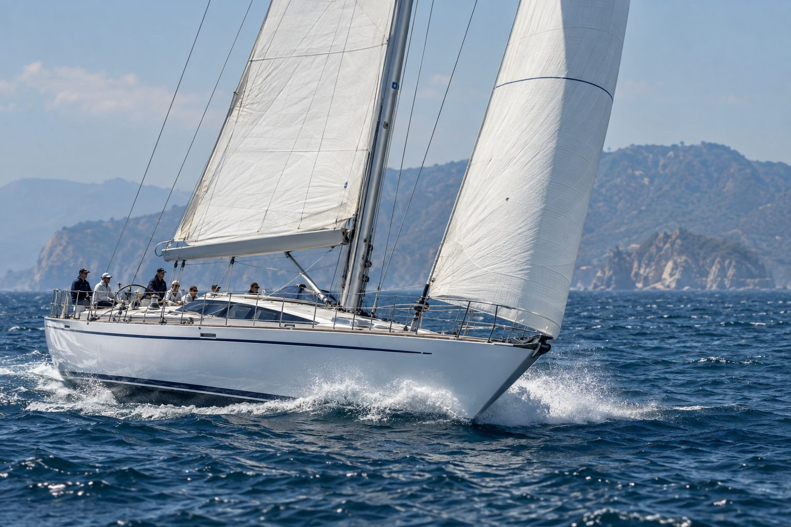

Marina del Rey, California
A 78-foot Swan, and the four ways to spend time on her.
Kestrel is a privately owned Nautor Swan 78 — teak decks, four cabins, and a crew who has taken her to Catalina more times than they can count. Stay the night at the slip, take the helm for a day, or cross the channel with a chef aboard.
- Length
- 78 ft
- Sleeps
- 8 guests
- Underway
- Up to 12
- Home slip
- Basin D, MdR
- From
- $895 / night
Four ways aboard
Pick your version of a day on the water.
Every charter is private — one party at a time, never shared. Captain and crew included on anything that leaves the dock.
The yacht
Built in Finland in 1989. Kept like it matters.
A Frers-designed Nautor Swan: solid fiberglass hull, 12mm teak deck replaced in the last refit, and hand-rubbed Burmese teak below. She was refit in Europe over two seasons before crossing to California, and she has been maintained on a professional schedule ever since.
| Builder / designer | Nautor Swan, Finland · German Frers |
|---|---|
| Length overall · beam | 78 ft · 19 ft 2 in |
| Draft | 9 ft 8 in |
| Accommodation | 4 cabins, 4 heads, sleeps 8 |
| Rig | Sloop, in-mast furling main, hydraulic furling genoa |
| Engine · generator | Diesel with bow thruster · 15.5 kW |
| Comfort | Air conditioning, watermaker, dishwasher, full galley |
| Navigation | B&G plotters, radar, autopilot, satellite phone |

What that means for you
A big boat is a calm boat.
Steady in the afternoon breeze
Santa Monica Bay fills in hard by 2 p.m. On 78 feet of Swan, 18 knots of wind reads as pleasant rather than eventful — the boat settles down and goes.
Actual cabins, actual doors
Four private double cabins with four heads, each with a real shower. Two couples or a family of eight fit without anybody sleeping on a settee.
Push-button sail handling
In-mast furling main, hydraulic winches, and a bow thruster. Guests who want to drive can drive; nobody has to wrestle a sail.
Set up to stay put
Air conditioning, hot water, a watermaker, and a galley with a dishwasher. Whether at the slip or on a Catalina mooring, it works like a house.
Aboard
Slip, saloon, and the channel crossing.




Guests
Reviews from the last season.
★★★★★
“We booked two nights at the slip for our anniversary and never left the boat. Coffee in the cockpit at 6 a.m. is the whole thing.”
★★★★★
“Captain Marc handed me the wheel twenty minutes out and let me keep it all the way to Malibu. Eight of us, nobody crowded.”
★★★★★
“Two nights at Two Harbors with a chef aboard. Better than any hotel we have stayed in, and we swam off the stern twice a day.”
Good to know
The practical questions.
Can we stay aboard without going sailing?
Yes — that is the Night Aboard. The yacht stays in her slip, you have the whole boat to yourselves, and no captain is required. Two-night minimum, check-in from 4 p.m., check-out at 11 a.m.
Do we need any sailing experience?
None. Every charter that leaves the dock includes a USCG-licensed captain and at least one mate. If you want to learn, say so when you book and the crew will build the day around it.
How many guests can come?
Up to 12 guests while underway, and up to 8 sleeping aboard across four private cabins. Larger groups can be accommodated dockside for events — ask us.
What about seasickness and weather?
A 78-foot hull is remarkably steady, and the crew will adjust the route if the bay is lumpy. If the captain cancels for weather, you get a full refund or a free reschedule, your choice.
Is there parking, and can we bring food?
Two parking passes come with every charter, and the marina gate code is texted the morning of. Bring whatever you like — or add the provisioning package and find the galley already stocked.
What is the cancellation policy?
Free cancellation up to 14 days before departure. Inside 14 days the 30% deposit is held as credit toward any future date within a year.
Next available
She is in the slip and the calendar is open.
Pick a date, choose an experience, and hold it in about two minutes.